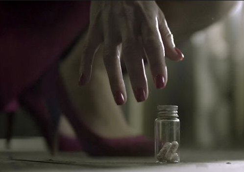

SHERLOCK S01 E01 A STUDY IN PINK

"A Study in Pink" is the first episode of the television series Sherlock and first broadcast on BBC One and BBC HD on 25 July 2010. It introduces the main characters and resolves a murder mystery. It is loosely based upon the first Sherlock Holmes novel, A Study in Scarlet.[1] The episode was written by Steven Moffat, who co-created the series. It was originally filmed as a 60-minute pilot for Sherlock, directed by Coky Giedroyc.[2][3] However, the BBC decided not to transmit the pilot, but instead commissioned a series of three 90-minute episodes.[4] The story was refilmed, this time directed by Paul McGuigan. The British Board of Film Classification has rated the pilot as a 12 certificate (not suitable for children under 12) for video and online exhibition, and it is included as an additional feature on the DVD released on 30 August 2010.[5]